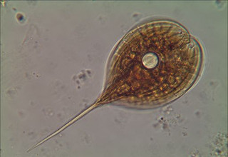

Blog – Plankton Ecology and Biogeochemistry
Post on 9:11 PM, Sunday, December 23, 2018
Plankton: The Ghosts of the Ocean Link here. A Tale of Two Crowds: Public Engagement in Plankton Classification Link here. New NSF award to link plankton with sinking particles Link here. Today at the microscope (05/27/2016) Link here. Surface phytoplankton and sinking particles offshore of Rhode Island Link here. Individually sinking cell from the Pacific Link here. Three of us were present to share our work and meet supporters and scientists involved with the work of the Falkor. SOI’s ongoing projects were presented, and future ones revealed for expanding ocean awareness and education in high tech ways. Wendy Schmidt is supporting some really cool work all over the world. And hats off to her organization for supporting the connection and importance of art and science working together!